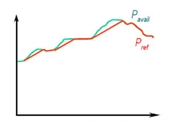
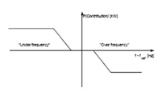

There are parks that have wind turbines that allowcontrol the power delivered to the Network, regardless of the existing wind speed (i.e., they have control elements such that the power delivered is less than the power it could give at that time). With this type of wind turbines, the total power delivered to the Network can be controlled by making a distribution of production between the different wind turbines, for each change in theproduction. This is the case with the DFIGs-type wind turbines and those controlled by Rotor Resistance.
Other types of wind turbines, such as fixed-speed shovel or those that operate by control by "Active Stall," do not have that capacity: in this case the monitoring of the power delivery to the Network is done by disconnecting some of the wind turbines.
The park can implement several criteria to adapt to the change of power delivery. The following figures show some:
•Forupper limit.

•Forgradient limitation: the change of the slogan is followed, but without sudden transitions.

•Withcontinuous monitoringbut with a reserve margin:

The park may also be forced to participate in maintaining the frequency of the Network, an important part of the stability of the network: in this case the power control system delivered is more sophisticated and has to obey the parameters of the Network, governed for a curve similar to the following:
